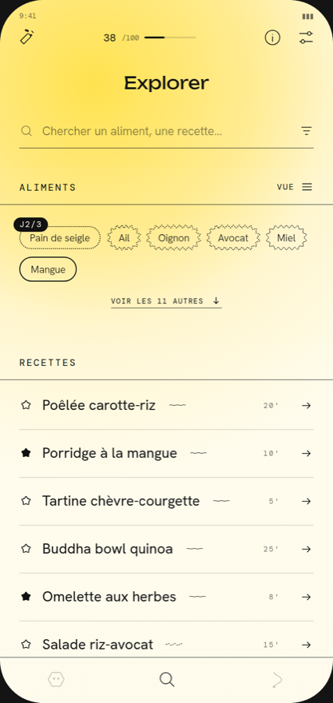

GutQuest
Le protocole FODMAP, aliment par aliment.

- Un catalogue de 344 aliments, avec la portion conseillée pour chacun.
- Le test d'un aliment sur 3 jours, à portions croissantes, qui s'arrête dès que ça coince.
- Vos seuils personnels, lisibles à la forme du contour, jamais à une couleur.
- Le journal du ressenti, en deux minutes, sans noter chaque repas.
- Vos données de santé ne quittent pas votre téléphone.